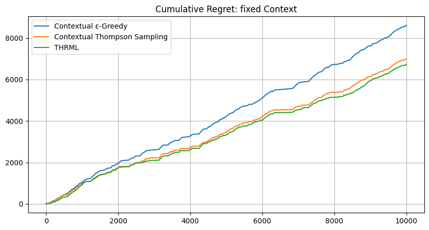
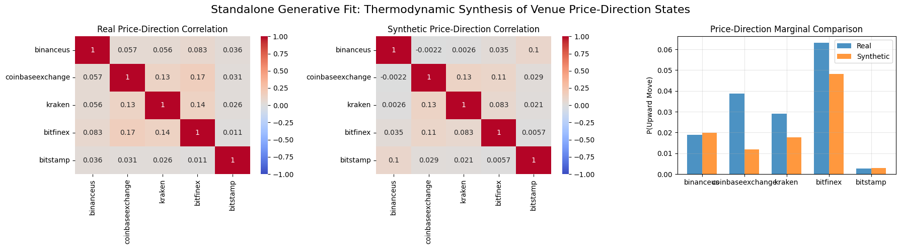

Show the code
# Install necessary libraries for the experiment in the Colab environment
%pip install -q ccxt pandas thrml>=0.1.3 matplotlib seaborn
NOTE: This notebook is configured to run on fresh historical data using a rolling window. The results will differ from the fixed dataset used in the article.
argmax on observed prices, and drops buckets where no venue has an observed price yet. This models a sell-side routing objective where the highest available price is optimal.| Parameter | Value | Description |
|---|---|---|
n_venues |
5 | Number of trading venues |
n_steps |
10,000 target | Rolling-window target before dropping buckets with no observed venue prices |
n_seeds |
200 | Independent runs for statistical significance |
discount_factor |
0.995 | Forgetting factor for non-stationary adaptation |
learning_rate |
0.05 | THRML learning rate |
steps_per_sample |
4 | Gibbs sampling thinning parameter |
propagation_damping |
0.3 | Mean-field signal propagation factor |
epsilon |
0.1 | ε-Greedy exploration rate |
# Install necessary libraries for the experiment in the Colab environment
%pip install -q ccxt pandas thrml>=0.1.3 matplotlib seaborn# --- STANDARD IMPORTS ---
import os
import sys
import time
from typing import NamedTuple, Tuple, Dict
import numpy as np
import pandas as pd
import matplotlib.pyplot as plt
import jax
import jax.numpy as jnp
from jax import random, lax, vmap, jit
from thrml import SpinNode, Block, SamplingSchedule, sample_states
from thrml.models import IsingEBM, IsingSamplingProgram, hinton_init
import ccxt
print("--- HISTORICAL DATA EXPERIMENT ---")
print("This notebook fetches rolling historical window for replication on fresh data; results vary by execution time.")
print("Ready to go!")--- HISTORICAL DATA EXPERIMENT ---
This notebook fetches rolling historical window for replication on fresh data; results vary by execution time.
Ready to go!# Configuration settings for the experiments and agents
class ExperimentConfig(NamedTuple):
n_venues: int = 5 # Number of trading venues participating in the simulation
n_context_venues: int = 1
n_steps: int = 10000 # Target routing steps before dropping buckets with no observed venue prices
n_seeds: int = 200
window_size: int = 200 # Memory depth for incremental covariance tracking
beta: float = 1.0
n_warmup: int = 50
n_samples: int = 100
steps_per_sample: int = 4
discount_factor: float = 0.995 # Exponential decay factor for adapting to non-stationary shifts
learning_rate: float = 0.05 # Step size for bias and edge weight updates,
propagation_damping: float = 0.3
context_mode: str = "fixed"
damp_coupling: bool = Trueclass AgentState_CEG(NamedTuple):
successes: jnp.ndarray
counts: jnp.ndarray
class AgentState_CTS(NamedTuple):
alphas: jnp.ndarray
betas: jnp.ndarray
class AgentState_THRML(NamedTuple):
biases: jnp.ndarray
weights: jnp.ndarray
history_buffer: jnp.ndarray
history_ptr: jnp.ndarray
full_history_count: jnp.ndarray
cov_sum: jnp.ndarray
pair_counts: jnp.ndarraydef thrml_init(n_venues, window_size=200):
"""
Standardized initialization for THRML Agent State.
Ensures memory depth is consistent across experiments.
"""
return AgentState_THRML(
biases=jnp.zeros(n_venues),
weights=jnp.zeros((n_venues * (n_venues - 1)) // 2),
history_buffer=jnp.zeros((window_size, n_venues)),
history_ptr=jnp.array(0, dtype=jnp.int32),
full_history_count=jnp.array(0, dtype=jnp.int32),
cov_sum=jnp.zeros((n_venues, n_venues)),
pair_counts=jnp.zeros((n_venues, n_venues))
)
def thrml_update(state, outcomes, obs_mask, model_node_moms, model_edge_moms,
discount_factor, beta, learning_rate,
propagation_damping=0.3, damp_coupling=True):
"""
Perform the learning step using the THRML Ising model.
Uses a custom online update rule inspired by contrastive divergence.
"""
n_venues = state.biases.shape[0]
triu_idx = jnp.triu_indices(n_venues, 1)
# 1. Update Node Biases (h)
J = jnp.zeros((n_venues, n_venues)).at[triu_idx].set(state.weights)
J = J + J.T
influence = propagation_damping * learning_rate * beta * (J @ (outcomes * obs_mask)) * (1.0 - obs_mask)
new_biases = (state.biases * discount_factor) + (learning_rate * beta * (outcomes * obs_mask - model_node_moms * obs_mask)) + influence
# 2. Update Empirical Covariance (XX^T)
old_obs = state.history_buffer[state.history_ptr]
old_present = (old_obs != 0).astype(jnp.float32)
new_obs = outcomes * obs_mask
new_present = obs_mask
new_cov_sum = state.cov_sum - jnp.outer(old_obs, old_obs) + jnp.outer(new_obs, new_obs)
new_pair_counts = state.pair_counts - jnp.outer(old_present, old_present) + jnp.outer(new_present, new_present)
# 3. Handle Cyclic Buffer
new_buffer = state.history_buffer.at[state.history_ptr].set(new_obs)
new_ptr = (state.history_ptr + 1) % state.history_buffer.shape[0]
new_count = jnp.minimum(state.full_history_count + 1, state.history_buffer.shape[0])
# 4. Update Edge Weights (J)
emp_cov = new_cov_sum / jnp.maximum(new_pair_counts, 1.0)
emp = emp_cov[triu_idx]
pairs_observed = new_pair_counts[triu_idx] > 0
innovation = beta * learning_rate * (emp - model_edge_moms)
innovation = jnp.where(damp_coupling, innovation, 0.0)
new_weights = (state.weights * discount_factor) + jnp.where(pairs_observed, innovation, 0.0)
return AgentState_THRML(new_biases, new_weights, new_buffer, new_ptr, new_count, new_cov_sum, new_pair_counts)def select_among_max(key, scores, mask):
"""Choose venue by breaking ties randomly with small noise."""
noise = random.uniform(key, scores.shape, minval=-1e-6, maxval=1e-6)
return jnp.argmax(scores + mask + noise)
def build_thrml_infra(n_venues, config):
"""
Pre-calculates JAX-optimized graph structures.
Uses a fixed program structure that clamps the first n_context_venues.
Selection logic will permute nodes to satisfy this structure.
"""
nodes = [SpinNode() for _ in range(n_venues)]
edges = [(nodes[i], nodes[j]) for i in range(n_venues) for j in range(i+1, n_venues)]
schedule = SamplingSchedule(
n_warmup=config.n_warmup,
n_samples=config.n_samples,
steps_per_sample=config.steps_per_sample
)
# Static program structure for conditional selection: always clamp first K nodes
clamped_block = Block(nodes[:config.n_context_venues])
free_blocks = [Block([nodes[i]]) for i in range(config.n_context_venues, n_venues)]
dummy_model = IsingEBM(nodes, edges, jnp.zeros(n_venues), jnp.zeros(len(edges)), jnp.array(config.beta))
prog_conditional = IsingSamplingProgram(dummy_model, free_blocks, clamped_blocks=[clamped_block])
# Static program structure for joint update: no clamped nodes
serial_blocks = [Block([n]) for n in nodes]
prog_joint = IsingSamplingProgram(dummy_model, serial_blocks, clamped_blocks=[])
return {
'nodes': nodes,
'edges': edges,
'sched': schedule,
'prog': prog_conditional,
'joint_prog': prog_joint,
'full_block': [Block(nodes)]
}def get_context_index(context_venues, context_outcomes, n_venues, n_context_venues):
# Encode the full context tuple (venues + outcomes) into a single integer.
# Uses Horner's method for base-2N encoding: index = sum(state_i * (2N)^i)
# where state_i = venue_i * 2 + outcome_bit_i
outcome_bits = (context_outcomes > 0).astype(jnp.int32)
venue_states = context_venues * 2 + outcome_bits
def scan_fn(val, state_i):
return val * (2 * n_venues) + state_i, None
index, _ = lax.scan(scan_fn, 0, venue_states)
return indexdef ceg_init(config: ExperimentConfig) -> AgentState_CEG:
# Scale context space to (2N)^K to support multiple context venues
n_contexts = (2 * config.n_venues) ** config.n_context_venues
return AgentState_CEG(
successes=jnp.zeros((n_contexts, config.n_venues)),
counts=jnp.zeros((n_contexts, config.n_venues))
)
def cts_init(config: ExperimentConfig, prior_alpha: float=1.0, prior_beta: float=1.0) -> AgentState_CTS:
n_contexts = (2 * config.n_venues) ** config.n_context_venues
return AgentState_CTS(
alphas=jnp.ones((n_contexts, config.n_venues)) * prior_alpha,
betas=jnp.ones((n_contexts, config.n_venues)) * prior_beta
)
def ceg_select(state, key, cidx, routing_mask, epsilon=0.1):
"""Choose venue using tabular E-Greedy given context."""
n = state.counts.shape[1]
means = jnp.where(state.counts[cidx] > 0, state.successes[cidx] / state.counts[cidx], 0.5)
k_e, k_r = random.split(key)
act = jnp.where(random.uniform(k_e) < epsilon,
random.categorical(k_r, jnp.zeros(n) + routing_mask),
select_among_max(k_r, means, routing_mask))
return act
def ceg_update(state, cidx, venue, outcome, discount_factor):
"""Update expectations with global decay and local venue observation."""
s = state.successes * discount_factor; c = state.counts * discount_factor
return AgentState_CEG(s.at[cidx, venue].add(jnp.where(outcome > 0, 1.0, 0.0)), c.at[cidx, venue].add(1.0))
def cts_select(state, key, cidx, routing_mask):
"""Choose venue using Bayesian sampling given context."""
samples = random.beta(key, state.alphas[cidx], state.betas[cidx])
return jnp.argmax(samples + routing_mask)
def cts_update(state, cidx, venue, outcome, discount_factor):
"""Update posteriors with global decay and local venue observation."""
a = (state.alphas - 1.0) * discount_factor + 1.0; b = (state.betas - 1.0) * discount_factor + 1.0
return AgentState_CTS(a.at[cidx, venue].add(jnp.where(outcome > 0, 1.0, 0.0)), b.at[cidx, venue].add(jnp.where(outcome > 0, 0.0, 1.0)))# =============================================================================
# ROLLING WINDOW CONFIGURATION - FETCHES THE LATEST 10K-SECOND WINDOW
# =============================================================================
# This experiment uses a rolling 10,000-second window that automatically
# fetches the most recent available data. This ensures:
# 1. Data is fresh and reflects current market conditions
# 2. Results are based on up-to-date exchange behavior
# 3. Each run independently validates the experiment on new data
#
# The window ends 5 minutes ago (to ensure trade data has propagated)
# and spans exactly 10,000 seconds (~2.78 hours) backward from there.
# Buckets with no observed venue prices are dropped later before routing labels
# are created, so the final usable step count can be slightly smaller.
# =============================================================================
import time
from datetime import datetime, timezone
# Configuration
EXPECTED_STEPS = 10000 # Target 10k-second window before unusable-bucket trimming
BUFFER_SECONDS = 300 # 5-minute buffer to ensure data availability
# Calculate rolling window: ends 5 min ago, spans 10k seconds back
current_time_ms = int(time.time() * 1000)
HIST_END_MS = current_time_ms - (BUFFER_SECONDS * 1000) # 5 min ago
HIST_START_MS = HIST_END_MS - (EXPECTED_STEPS * 1000) # 10k seconds before that
# Display the window
start_dt = datetime.fromtimestamp(HIST_START_MS / 1000, tz=timezone.utc)
end_dt = datetime.fromtimestamp(HIST_END_MS / 1000, tz=timezone.utc)
print("=" * 65)
print("ROLLING WINDOW EXPERIMENT - LATEST 10,000-SECOND WINDOW")
print("=" * 65)
print(f"Window Start: {start_dt.strftime('%Y-%m-%d %H:%M:%S UTC')}")
print(f"Window End: {end_dt.strftime('%Y-%m-%d %H:%M:%S UTC')}")
print(f"Window Span: {EXPECTED_STEPS:,} seconds ({EXPECTED_STEPS:,} target buckets)")
print(f"Data Age: ~{BUFFER_SECONDS // 60} minutes old (buffer for propagation)")
print("=" * 65)
print("Note: Each run fetches fresh data, so results may vary slightly")
print("between runs due to different market conditions.")=================================================================
ROLLING WINDOW EXPERIMENT - LATEST 10,000-SECOND WINDOW
=================================================================
Window Start: 2026-03-18 12:42:30 UTC
Window End: 2026-03-18 15:29:10 UTC
Window Span: 10,000 seconds (10,000 target buckets)
Data Age: ~5 minutes old (buffer for propagation)
=================================================================
Note: Each run fetches fresh data, so results may vary slightly
between runs due to different market conditions.SYMBOL = 'BTC/USDT'
EXCHANGES = [
'binanceus',
'coinbaseexchange',
'kraken',
'bitfinex',
'bitstamp',
]
TIME_BUCKET_MS = 1000
TARGET_BUCKETS = 10000 # Rolling window: exactly 10,000 stepsdef sync_trades_hist(exchange_name: str, start_ms: int, end_ms: int) -> pd.DataFrame:
"""
Fetch historical trades from exchange for a specific time window.
"""
exchange = getattr(ccxt, exchange_name)({'enableRateLimit': True})
MAX_ITERATIONS = 1000
def get_trade_timestamp(trade):
if 'timestamp' in trade and trade['timestamp'] is not None:
return trade['timestamp']
if 'datetime' in trade and trade['datetime'] is not None:
from datetime import datetime
dt = datetime.fromisoformat(trade['datetime'].replace('Z', '+00:00'))
return int(dt.timestamp() * 1000)
if 'info' in trade:
info = trade['info']
if 'date' in info: return int(info['date']) * 1000
if 'timestamp' in info: return int(info['timestamp'])
raise KeyError(f"Could not extract timestamp")
try:
exchange.load_markets()
symbol = SYMBOL if SYMBOL in exchange.markets else "BTC/USD"
all_trades = []; seen_ids = set(); iterations = 0
last_batch_id = None
if exchange_name == 'kraken':
since = start_ms
while iterations < MAX_ITERATIONS:
iterations += 1
# Kraken's 'since' parameter expects milliseconds in CCXT
trades = exchange.fetch_trades(symbol, since=since, limit=1000)
if not trades or trades[0].get('id') == last_batch_id: break
last_batch_id = trades[0].get('id')
for t in trades:
ts = get_trade_timestamp(t)
tid = str(t.get('id', ts))
if start_ms <= ts <= end_ms and tid not in seen_ids:
seen_ids.add(tid)
all_trades.append({'timestamp': ts, 'price': float(t['price']), 'id': tid})
if not trades: break
last_ts = get_trade_timestamp(trades[-1])
if last_ts >= end_ms: break
try:
# Kraken returns 'last' id in nanoseconds, but ccxt expects ms for 'since'
raw = exchange.last_json_response
last_id_ns = int(raw['result'].get('last', str(last_ts) + '000000'))
since = last_id_ns // 1000000 # Convert ns to ms
except:
since = last_ts + 1000 # Fallback
time.sleep(exchange.rateLimit / 1000)
elif exchange_name == 'bitstamp':
since = start_ms
while iterations < MAX_ITERATIONS:
iterations += 1
# For Bitstamp, we request 'day' to get access to the 24h buffer
trades = exchange.fetch_trades(symbol, limit=1000, since=since, params={'time': 'day'})
if not trades: break
# Check for duplicates (if API ignores 'since' and returns latest trades repeatedly)
if trades[0].get('id') == last_batch_id:
break
last_batch_id = trades[0].get('id')
for t in trades:
ts = get_trade_timestamp(t)
tid = str(t.get('id', ts))
if start_ms <= ts <= end_ms and tid not in seen_ids:
seen_ids.add(tid)
all_trades.append({'timestamp': ts, 'price': float(t['price']), 'id': tid})
last_ts = get_trade_timestamp(trades[-1])
if last_ts >= end_ms: break
# Update since for next batch (if supported)
since = last_ts + 1
time.sleep(exchange.rateLimit / 1000)
elif exchange_name == 'coinbaseexchange':
cursor = None
while iterations < MAX_ITERATIONS:
iterations += 1
params = {'limit': 1000}
if cursor: params['after'] = cursor
trades = exchange.fetch_trades(symbol, limit=1000, params=params)
if not trades or (len(trades) > 0 and trades[0].get('id') == last_batch_id):
break
last_batch_id = trades[0].get('id')
for t in trades:
ts = get_trade_timestamp(t)
tid = str(t.get('id', ts))
if start_ms <= ts <= end_ms and tid not in seen_ids:
seen_ids.add(tid)
all_trades.append({'timestamp': ts, 'price': float(t['price']), 'id': tid})
oldest_ts = get_trade_timestamp(trades[-1])
# Try to get cursor from headers first (more reliable)
header_cursor = None
if hasattr(exchange, 'last_response_headers') and exchange.last_response_headers:
header_cursor = (exchange.last_response_headers.get('cb-after') or
exchange.last_response_headers.get('CB-AFTER'))
cursor = header_cursor or trades[-1].get('id')
if oldest_ts < start_ms: break
time.sleep(exchange.rateLimit / 1000)
else:
since = start_ms
while iterations < MAX_ITERATIONS:
iterations += 1
trades = exchange.fetch_trades(symbol, since=since, limit=1000)
if not trades or trades[0].get('id') == last_batch_id: break
last_batch_id = trades[0].get('id')
for t in trades:
ts = get_trade_timestamp(t)
tid = str(t.get('id', ts))
if start_ms <= ts <= end_ms and tid not in seen_ids:
seen_ids.add(tid)
all_trades.append({'timestamp': ts, 'price': float(t['price']), 'id': tid})
last_ts = get_trade_timestamp(trades[-1])
if last_ts >= end_ms: break
since = last_ts + 1
time.sleep(exchange.rateLimit / 1000)
print(f" + {exchange_name:<10}: Fetched {len(all_trades)} trades ({iterations} API calls).")
if not all_trades: return pd.DataFrame(columns=['timestamp', 'price', 'id'])
return pd.DataFrame(all_trades).drop_duplicates(subset=['id']).sort_values('timestamp')
except Exception as e:
print(f" [ERROR] {exchange_name}: {e}")
return pd.DataFrame(columns=['timestamp', 'price', 'id'])def process_market_data(dfs: Dict[str, pd.DataFrame], start_ms: int, end_ms: int):
"""
Process raw trade data into time buckets and calculate favorable outcomes.
Uses the specified historical time window.
IMPORTANT: Some exchanges only provide recent historical data (up to 24 hours).
- Partially missing data is handled with forward filling only to preserve causality.
- Leading buckets before an exchange's first observed trade use a strict sentinel value (0.0).
- Sentinel buckets are excluded from winner selection until at least one venue has an observed price.
- Completely missing exchanges remain unavailable for winner selection throughout the window.
"""
# Validate we have data from exchanges
available_exchanges = [ex for ex, df in dfs.items() if not df.empty]
missing_exchanges = [ex for ex, df in dfs.items() if df.empty]
if missing_exchanges:
import time
current_time_ms = int(time.time() * 1000)
hours_since_start = (current_time_ms - start_ms) / 3600000
print(f"[WARNING] No data from: {', '.join(missing_exchanges)}")
if hours_since_start > 24:
print(f" NOTE: Historical window starts {hours_since_start:.1f} hours ago.")
print(f" Some exchanges (e.g., Bitstamp) only provide up to 24h of historical data.")
if not available_exchanges:
print(f"[CRITICAL] No data from ANY exchange! Cannot proceed.")
return np.array([[]], dtype=np.float32), np.array([[]], dtype=np.float32)
if len(available_exchanges) < len(dfs):
print(f"[INFO] Proceeding with data from: {', '.join(available_exchanges)}")
print(" Missing exchange data stays unavailable until a real observed price exists.")
# Use the historical window boundaries
t_start = start_ms
t_end = end_ms
buckets = np.arange(t_start, t_end, TIME_BUCKET_MS)
print(f"[DATA] Processing {len(buckets)} time buckets ({t_start} to {t_end})")
for ex, df in dfs.items():
if not df.empty:
actual_start = df['timestamp'].min()
actual_end = df['timestamp'].max()
coverage_sec = (actual_end - actual_start) / 1000
target_sec = (end_ms - start_ms) / 1000
print(f" [COVERAGE] {ex:<10}: {coverage_sec:>7.1f}s of {target_sec:.0f}s ({coverage_sec/target_sec*100:>5.1f}%)")
else:
print(f" [COVERAGE] {ex:<10}: 0.0s (0.0%) - NO DATA")
master = pd.DataFrame({'bucket': np.arange(len(buckets)), 'ts': buckets})
# Missing or not-yet-observed venues keep a strict sentinel placeholder until
# they have a real observed price. Sentinels are excluded from winner selection.
fallback_price = 0.0
for i, (ex, df) in enumerate(dfs.items()):
if df.empty:
master[f'v{i}_p'] = fallback_price
print(f" {ex}: Using fallback price ${fallback_price:.2f} (no data available)")
else:
ex_d = df[(df['timestamp'] >= t_start) & (df['timestamp'] <= t_end)].copy()
if ex_d.empty:
master[f'v{i}_p'] = fallback_price
print(f" {ex}: No trades in window, using fallback price ${fallback_price:.2f}")
else:
ex_d['b_idx'] = ((ex_d['timestamp'] - t_start) // TIME_BUCKET_MS).astype(int)
ex_b = ex_d.groupby('b_idx').agg({'price': 'last'}).rename(columns={'price': f'v{i}_p'})
master = master.join(ex_b, on='bucket', how='left')
first_trade_bucket = int(ex_b.index.min())
master[f'v{i}_p'] = master[f'v{i}_p'].ffill().fillna(fallback_price)
print(f" {ex}: {len(ex_d)} trades mapped to buckets (causal fill from bucket {first_trade_bucket})")
prices = [f'v{i}_p' for i in range(len(EXCHANGES))]
values = master[prices].values
available_mask = values > fallback_price
valid_rows = available_mask.any(axis=1)
dropped_rows = int((~valid_rows).sum())
if dropped_rows:
print(f"[DATA] Dropping {dropped_rows} leading buckets with no observed venue prices.")
if not np.any(valid_rows):
print("[CRITICAL] No bucket contains an observed venue price after preprocessing.")
return np.array([[]], dtype=np.float32), np.array([[]], dtype=np.float32)
master = master.loc[valid_rows].reset_index(drop=True)
values = master[prices].values
available_mask = values > fallback_price
masked_values = np.where(available_mask, values, -np.inf)
max_vals = masked_values.max(axis=1, keepdims=True)
is_max = available_mask & (masked_values == max_vals)
np.random.seed(42) # Seed for reproducible tie-breaking among observed venues
best_venue = np.array([np.random.choice(np.flatnonzero(row)) for row in is_max])
for i in range(len(EXCHANGES)):
master[f'v{i}_r'] = np.where(best_venue == i, 1.0, -1.0)
master[f'v{i}_s'] = master[f'v{i}_r']
cols_r = [f'v{i}_r' for i in range(len(EXCHANGES))]
cols_s = [f'v{i}_s' for i in range(len(EXCHANGES))]
return master[cols_r + cols_s].values.astype(np.float32), master[prices].values.astype(np.float32)def thrml_select_conditional(state, key, cvs, cos, infra, config):
n = config.n_venues
triu_idx = jnp.triu_indices(n, 1)
# 1. Create permutation mapping CVs to the first K indices
priorities = jnp.zeros(n, dtype=jnp.int32)
priorities = priorities.at[cvs].set(jnp.arange(config.n_context_venues))
is_context = jnp.zeros(n, dtype=jnp.bool_).at[cvs].set(True)
priorities = jnp.where(is_context, priorities, jnp.arange(n) + n)
perm = jnp.argsort(priorities)
inv_perm = jnp.argsort(perm)
def get_permuted_weights():
J = jnp.zeros((n, n)).at[triu_idx].set(state.weights)
J = J + J.T
J_p = J[perm][:, perm]
return J_p[triu_idx]
b_p = state.biases[perm]
w_p = lax.cond(jnp.all(perm == jnp.arange(n)), lambda: state.weights, get_permuted_weights)
# 2. Build model
model = IsingEBM(infra['nodes'], infra['edges'], b_p, w_p, jnp.array(config.beta))
updated_prog = IsingSamplingProgram(
model,
infra['prog'].gibbs_spec.superblocks,
infra['prog'].gibbs_spec.clamped_blocks
)
clamped_state = [(cos > 0).astype(jnp.bool_)]
k_init, k_sample, k_tie = random.split(key, 3)
init = hinton_init(k_init, model, updated_prog.gibbs_spec.free_blocks, ())
samples = sample_states(k_sample, updated_prog, infra['sched'], init, clamped_state, infra['full_block'])[0]
# 3. Decode results
spins = (2 * samples.astype(jnp.float32) - 1).reshape(samples.shape[0], -1)[:, inv_perm]
margs = jnp.mean(spins, axis=0)
probs = (margs + 1) / 2
routing_mask = jnp.zeros(n).at[cvs].set(-1e9)
# k_tie already assigned via split above
return select_among_max(k_tie, probs, routing_mask), probs
def thrml_sample_joint(state, key, infra, config):
"""Perform UNCLAMPED sampling for unbiased weight updates."""
model = IsingEBM(infra['nodes'], infra['edges'], state.biases, state.weights, jnp.array(config.beta))
updated_prog = IsingSamplingProgram(
model,
infra['joint_prog'].gibbs_spec.superblocks,
infra['joint_prog'].gibbs_spec.clamped_blocks
)
k1, k2 = random.split(key)
init = hinton_init(k1, model, updated_prog.gibbs_spec.free_blocks, ())
samples = sample_states(k2, updated_prog, infra['sched'], init, [], infra['full_block'])[0]
spins = (2 * samples.astype(jnp.float32) - 1).reshape(samples.shape[0], -1)
node_moms = jnp.mean(spins, axis=0)
edge_moms = ((spins.T @ spins) / config.n_samples)[jnp.triu_indices(state.biases.shape[0], 1)]
return node_moms, edge_momsdef run_one_seed(seed, config, data, infra):
n = config.n_venues; act_steps = data.shape[0]
def step(carry, step_idx):
rng, s_ceg, s_cts, s_thrml = carry
step_data = data[step_idx]
out_rewards = step_data[:n]
out_states = step_data[n:]
rng, k_c, k_a, k_u = random.split(rng, 4)
is_fixed = (config.context_mode == "fixed")
# Fetch multiple context venues
cvs = lax.cond(
is_fixed,
lambda: jnp.arange(config.n_context_venues),
lambda: jax.random.permutation(k_c, jnp.arange(n))[:config.n_context_venues]
)
cos = out_states[cvs]
cidx = get_context_index(cvs, cos, n, config.n_context_venues)
routing_mask = jnp.zeros(n).at[cvs].set(-1e9)
oracle_best = jnp.argmax(out_rewards + routing_mask); oracle_rew = out_rewards[oracle_best]
k_ceg, k_cts, k_thrml = random.split(k_a, 3)
act_ceg = ceg_select(s_ceg, k_ceg, cidx, routing_mask)
act_cts = cts_select(s_cts, k_cts, cidx, routing_mask)
a_thrml, _ = thrml_select_conditional(s_thrml, k_thrml, cvs, cos, infra, config)
model_node_moms, model_edge_moms = thrml_sample_joint(s_thrml, k_u, infra, config)
regret = oracle_rew - jnp.array([out_rewards[act_ceg], out_rewards[act_cts], out_rewards[a_thrml]])
next_ceg = ceg_update(s_ceg, cidx, act_ceg, out_rewards[act_ceg], config.discount_factor)
next_cts = cts_update(s_cts, cidx, act_cts, out_rewards[act_cts], config.discount_factor)
obs_mask = jnp.zeros(n).at[cvs].set(1.0).at[a_thrml].set(1.0)
next_thrml = thrml_update(s_thrml, out_states * obs_mask, obs_mask, model_node_moms, model_edge_moms,
config.discount_factor, config.beta, config.learning_rate,
config.propagation_damping, config.damp_coupling)
return (rng, next_ceg, next_cts, next_thrml), regret
initial_carry = (seed, ceg_init(config), cts_init(config), thrml_init(n, config.window_size))
final_carry, results = jax.lax.scan(step, initial_carry, jnp.arange(act_steps))
return {
"Contextual ε-Greedy": jnp.cumsum(results[:, 0]),
"Contextual Thompson Sampling": jnp.cumsum(results[:, 1]),
"THRML": jnp.cumsum(results[:, 2]),
"thrml_biases": final_carry[3].biases,
"thrml_weights": final_carry[3].weights
}def execute_experiment():
print(f"[START] Fetching Historical Data...")
print(f" Time window: {HIST_START_MS} to {HIST_END_MS}")
# Fetch historical trades from each exchange
dfs = {ex: sync_trades_hist(ex, HIST_START_MS, HIST_END_MS) for ex in EXCHANGES}
# Process the historical data
raw_data, raw_prices = process_market_data(dfs, HIST_START_MS, HIST_END_MS)
if raw_data.size == 0:
print("[ERROR] No data retrieved. Check your timestamps and try again.")
return
data = jnp.array(raw_data)
print(f"[DATA] Dataset Final Size: {data.shape[0]} bucketted seconds.")
config = ExperimentConfig(n_steps=data.shape[0], n_venues=len(EXCHANGES)); infra = build_thrml_infra(config.n_venues, config)
seeds = random.split(random.key(42), config.n_seeds)
labels = ["Contextual ε-Greedy", "Contextual Thompson Sampling", "THRML"]; summary = {}
# BATCHING SETTINGS TO PREVENT CUDA OOM
BATCH_SIZE = 50
jax.clear_caches()
n_total_seeds = config.n_seeds
for mode_name in ["fixed", "random"]:
conf = config._replace(context_mode=mode_name)
print(f"[RUN] Running {mode_name.upper()} Context (Batched execution to prevent OOM)... ")
# Initialize storage for batched results
all_res_list = []
# Compile runner inside jit for a single batch to keep graph smaller
runner = jit(vmap(lambda s: run_one_seed(s, conf, data, infra)))
start_time = time.time()
for i in range(0, n_total_seeds, BATCH_SIZE):
batch_seeds = seeds[i : i + BATCH_SIZE]
print(f" - Processing seeds {i} to {i + len(batch_seeds)}...", end="")
batch_start = time.time()
res = runner(batch_seeds)
# Ensure computation for this batch is done and clear from GPU staging
res = jax.tree_util.tree_map(lambda x: x.block_until_ready(), res)
all_res_list.append(res)
print(f" [{time.time()-batch_start:.1f}s]")
# Combine results across batches
batch_res = {}
for lbl in labels:
batch_res[lbl] = jnp.concatenate([r[lbl] for r in all_res_list], axis=0)
batch_res["thrml_biases"] = jnp.concatenate([r["thrml_biases"] for r in all_res_list], axis=0)
batch_res["thrml_weights"] = jnp.concatenate([r["thrml_weights"] for r in all_res_list], axis=0)
print(f" [DONE] Total Context mode completed in {time.time()-start_time:.1f}s")
summary[mode_name] = jnp.array([jnp.mean(batch_res[lbl][:, -1]) for lbl in labels])
plt.figure(figsize=(10, 5))
for i, lbl in enumerate(labels):
plt.plot(jnp.mean(batch_res[lbl], axis=0), label=lbl)
plt.title(f"Cumulative Regret: {mode_name} Context"); plt.legend(); plt.grid(True);import os
os.makedirs('images', exist_ok=True)
plt.savefig(f'images/real_data_{mode_name}_regret.png'); plt.show()
if mode_name == "random":
global_final_biases = jnp.mean(batch_res["thrml_biases"], axis=0)
global_final_weights = jnp.mean(batch_res["thrml_weights"], axis=0)
print("" + "="*45)
print(f"{ 'MODE':<10} | { 'Contextual ε-Greedy':<10} | {'Contextual Thompson Sampling':<10} | {'THRML':<10}")
for m, v in summary.items():
print(f"{m:<10} | {float(v[0]):<10.2f} | {float(v[1]):<10.2f} | {float(v[2]):<10.2f}")
print("=" * 45)
return data, global_final_biases, global_final_weights, infra, config, raw_prices# Run the experiment
data, final_biases, final_weights, infra, config, prices = execute_experiment()[START] Fetching Historical Data...
Time window: 1773837750372 to 1773847750372
+ binanceus : Fetched 609 trades (3 API calls).
+ coinbaseexchange: Fetched 2479 trades (4 API calls).
+ kraken : Fetched 1592 trades (2 API calls).
+ bitfinex : Fetched 3160 trades (4 API calls).
+ bitstamp : Fetched 120 trades (1 API calls).
[DATA] Processing 10000 time buckets (1773837750372 to 1773847750372)
[COVERAGE] binanceus : 9875.9s of 10000s ( 98.8%)
[COVERAGE] coinbaseexchange: 9938.1s of 10000s ( 99.4%)
[COVERAGE] kraken : 9993.6s of 10000s ( 99.9%)
[COVERAGE] bitfinex : 9988.7s of 10000s ( 99.9%)
[COVERAGE] bitstamp : 9579.0s of 10000s ( 95.8%)
binanceus: 609 trades mapped to buckets (causal fill from bucket 12)
coinbaseexchange: 2479 trades mapped to buckets (causal fill from bucket 11)
kraken: 1592 trades mapped to buckets (causal fill from bucket 5)
bitfinex: 3160 trades mapped to buckets (causal fill from bucket 2)
bitstamp: 120 trades mapped to buckets (causal fill from bucket 47)
[DATA] Dropping 2 leading buckets with no observed venue prices.
[DATA] Dataset Final Size: 9998 bucketted seconds.
[RUN] Running FIXED Context (Batched execution to prevent OOM)...
- Processing seeds 0 to 50... [225.2s]
- Processing seeds 50 to 100... [202.3s]
- Processing seeds 100 to 150... [202.2s]
- Processing seeds 150 to 200... [202.3s]
[DONE] Total Context mode completed in 832.2s
[RUN] Running RANDOM Context (Batched execution to prevent OOM)...
- Processing seeds 0 to 50... [222.6s]
- Processing seeds 50 to 100... [200.7s]
- Processing seeds 100 to 150... [200.7s]
- Processing seeds 150 to 200... [200.6s]
[DONE] Total Context mode completed in 824.7s
=============================================
MODE | Contextual ε-Greedy | Contextual Thompson Sampling | THRML
fixed | 8610.59 | 7002.17 | 6738.68
random | 8848.45 | 8134.47 | 4901.35
=============================================This section is a separate standalone generative experiment, not a validation of the routing agent’s learned state.
Starting from the raw exchange price series fetched above, we derive a binary price-direction state for each venue at each timestep (\(+1\) if the next price move is upward, \(-1\) otherwise). We then train a fresh Ising EBM on these fully observed price-direction states using unclamped model sampling for the negative phase.
This target distribution is different from the routing experiment above. The routing benchmark learns from competitive winner labels (exactly one venue receives \(+1\) per timestep under the sell-side routing objective), whereas this generative side experiment models market direction co-movements across venues. The goal here is therefore to assess whether THRML can fit and sample from the correlation structure of price-direction states, rather than to claim that the routing agent itself becomes a generative model.
import seaborn as sns
def generate_synthetic_data(biases, weights, n_samples, infra, config):
print(f"Generating {n_samples} synthetic price-direction states using unclamped Gibbs sampling...")
model = IsingEBM(infra['nodes'], infra['edges'], biases, weights, jnp.array(config.beta))
# Recreate program based on static unclamped joint program blocks
prog = IsingSamplingProgram(
model,
infra['joint_prog'].gibbs_spec.superblocks,
clamped_blocks=[]
)
# Use trained steps_per_sample to ensure adequate mixing and decorrelation
sched = SamplingSchedule(n_warmup=100, n_samples=n_samples, steps_per_sample=config.steps_per_sample)
k1, k2 = random.split(random.key(42))
init = hinton_init(k1, model, prog.gibbs_spec.free_blocks, ())
samples = sample_states(k2, prog, sched, init, [], infra['full_block'])[0]
spins = 2 * samples.astype(jnp.float32) - 1
return spins.reshape(n_samples, -1)
# 1. Build a standalone generative dataset from venue price directions
# Trim the leading sentinel-only prefix so the generative model trains on fully observed causal prices.
valid_rows = np.all(prices > 0, axis=1)
if not np.any(valid_rows):
raise ValueError("No fully observed price rows are available for the standalone generative experiment.")
first_fully_observed_row = int(np.argmax(valid_rows))
trimmed_prices = prices[first_fully_observed_row:]
print(
f"Using price rows {first_fully_observed_row}..{prices.shape[0] - 1} "
f"for the standalone generative experiment ({trimmed_prices.shape[0]} fully observed buckets)."
)
price_diffs = np.diff(trimmed_prices, axis=0)
gen_states = jnp.array(np.where(price_diffs > 0, 1.0, -1.0))
# 2. Standalone unsupervised training loop over fully observed price-direction states
def train_generative_model(config, infra, states):
def step(carry, state_obs):
rng, s_thrml = carry
rng, k_u = random.split(rng)
# Unclamped sampling to get model moments
model_node_moms, model_edge_moms = thrml_sample_joint(s_thrml, k_u, infra, config)
# Fully observed update on price-direction states with stationary discounting
obs_mask = jnp.ones(config.n_venues)
next_thrml = thrml_update(
s_thrml, state_obs, obs_mask, model_node_moms, model_edge_moms,
1.0, config.beta, config.learning_rate,
config.propagation_damping, config.damp_coupling
)
return (rng, next_thrml), None
init_state = thrml_init(config.n_venues, config.window_size)
(final_rng, trained_gen_model), _ = jax.lax.scan(step, (random.key(99), init_state), states)
return trained_gen_model
print("Training standalone generative EBM on price-direction correlations...")
gen_model = train_generative_model(config, infra, gen_states)
# 3. Generate synthetic price-direction states using the dedicated generative model
synthetic_data = generate_synthetic_data(gen_model.biases, gen_model.weights, 5000, infra, config)Using price rows 45..9997 for the standalone generative experiment (9953 fully observed buckets).
Training standalone generative EBM on price-direction correlations...
Generating 5000 synthetic price-direction states using unclamped Gibbs sampling...# Extract the price-direction state observations for comparison
real_states = gen_states
# 1. Marginal Probabilities (P(Upward Move))
real_marginals = (np.mean(real_states, axis=0) + 1) / 2
synthetic_marginals = (np.mean(synthetic_data, axis=0) + 1) / 2
marg_mae = np.mean(np.abs(real_marginals - synthetic_marginals))
marg_mse = np.mean((real_marginals - synthetic_marginals)**2)
# 2. Pairwise Correlations
real_cov = np.corrcoef(real_states, rowvar=False)
synthetic_cov = np.corrcoef(synthetic_data, rowvar=False)
corr_mae = np.mean(np.abs(real_cov - synthetic_cov))
corr_mse = np.mean((real_cov - synthetic_cov)**2)
# 3. Visualization
fig, axes = plt.subplots(1, 3, figsize=(18, 5))
# Heatmap Real
sns.heatmap(real_cov, annot=True, cmap="coolwarm", center=0, ax=axes[0],
xticklabels=EXCHANGES, yticklabels=EXCHANGES, vmin=-1.0, vmax=1.0)
axes[0].set_title("Real Price-Direction Correlation")
# Heatmap Synthetic
sns.heatmap(synthetic_cov, annot=True, cmap="coolwarm", center=0, ax=axes[1],
xticklabels=EXCHANGES, yticklabels=EXCHANGES, vmin=-1.0, vmax=1.0)
axes[1].set_title("Synthetic Price-Direction Correlation")
# Marginal Bar Plot
x = np.arange(len(EXCHANGES))
width = 0.35
axes[2].bar(x - width/2, real_marginals, width, label='Real', color='#1f77b4', alpha=0.8)
axes[2].bar(x + width/2, synthetic_marginals, width, label='Synthetic', color='#ff7f0e', alpha=0.8)
axes[2].set_xticks(x)
axes[2].set_xticklabels(EXCHANGES)
axes[2].set_ylabel('P(Upward Move)')
axes[2].set_title('Price-Direction Marginal Comparison')
axes[2].legend()
axes[2].grid(True, alpha=0.3)
plt.suptitle("Standalone Generative Fit: Thermodynamic Synthesis of Venue Price-Direction States", fontsize=16)
plt.tight_layout()
import os
os.makedirs('images', exist_ok=True)
plt.savefig('images/generative_ai_heatmap.png')
plt.show()
print("=" * 65)
print("STANDALONE GENERATIVE VALIDATION ON PRICE-DIRECTION STATES")
print("=" * 65)
print(f"Marginal Probabilities MAE: {marg_mae:.4f}")
print(f"Marginal Probabilities MSE: {marg_mse:.4f}")
print("-" * 65)
print(f"Correlation Matrix MAE: {corr_mae:.4f}")
print(f"Correlation Matrix MSE: {corr_mse:.4f}")
print("=" * 65)
print("This section evaluates a fresh generative model trained on price-direction states, not the routing agent.")
=================================================================
STANDALONE GENERATIVE VALIDATION ON PRICE-DIRECTION STATES
=================================================================
Marginal Probabilities MAE: 0.0108
Marginal Probabilities MSE: 0.0002
-----------------------------------------------------------------
Correlation Matrix MAE: 0.0283
Correlation Matrix MSE: 0.0016
=================================================================
This section evaluates a fresh generative model trained on price-direction states, not the routing agent.